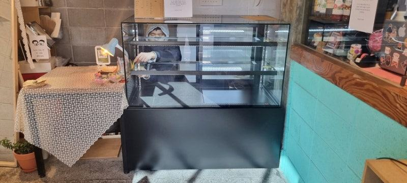
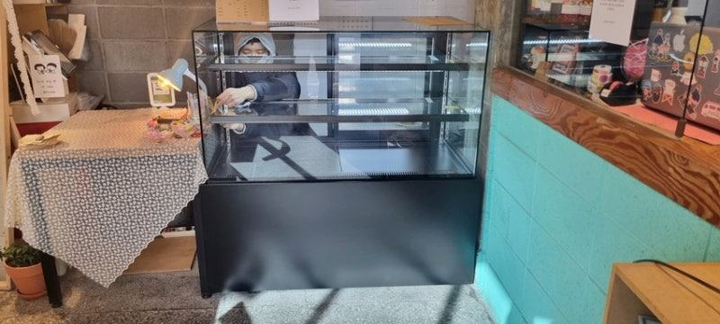
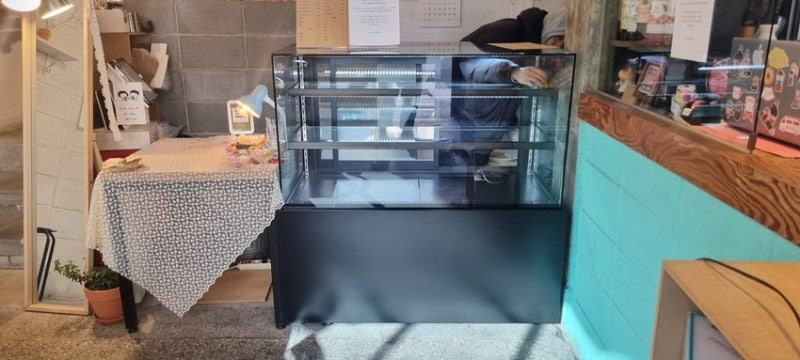
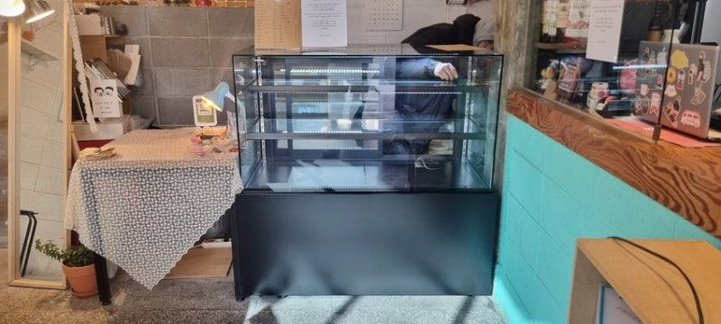
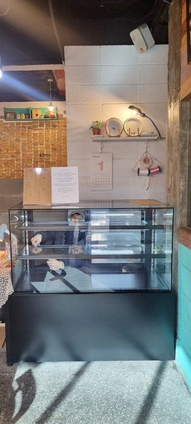
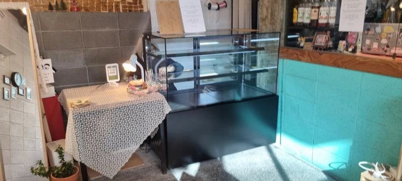
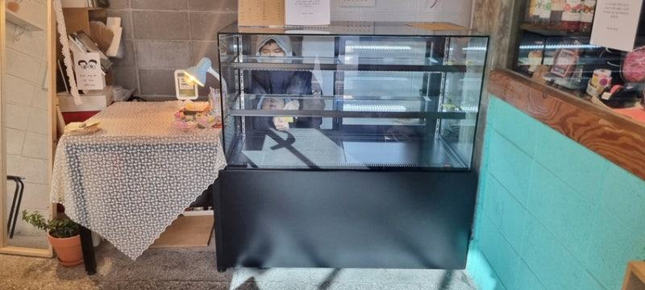
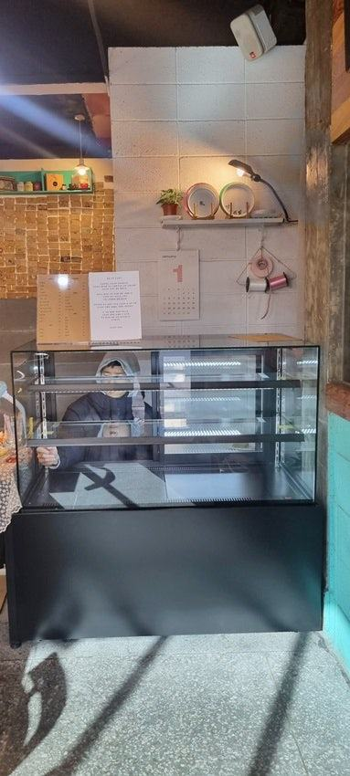
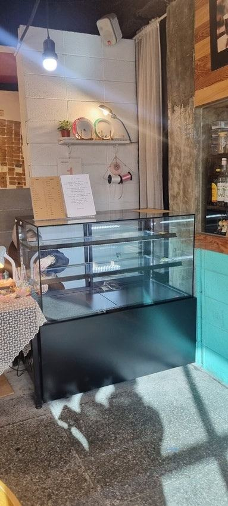

와인(음료)쇼케이스
업소용음료수냉장고 가격, 같은 크기인데 견적이 다른 이유

업소용음료수냉장고 가격은 크기보다 문이 몇 짝인지, 결로를 막는 유리가 들어가는지, 병 크기에 맞춘 선반과 조명, 뒤에서 채우는 구조인지 같은 사양에서 차이가 납니다. 견적은 이 항목을 같은 조건으로 맞춰 놓고 비교하고, 냉기 성능과 A/S까지 포함해 판단하셔야 나중에 후회가 적습니다.
안녕하세요. 카페와 식당, 주점에 들어가는 음료 냉장고를 매장에 맞춰 제작하는 한성쇼케이스입니다.
음료 냉장고 견적을 몇 군데 받아 보신 사장님들은 대개 같은 반응을 보이십니다. "겉보기엔 똑같은 유리문 냉장고인데 왜 이렇게 차이가 나죠?"
음료 냉장고는 하루에도 수십 번 문이 열리는 장비라, 문과 유리, 냉기 회복 속도에 들어간 사양이 그대로 가격과 쓰는 동안의 편의에 반영됩니다.
견적서 한 줄 한 줄을 보지 않으면 서로 다른 제품을 비교하게 되기 쉽습니다.
오늘은 음료 냉장고 가격을 가르는 항목과, 가장 싼 쪽을 골랐을 때 나중에 생기는 비용까지 함께 정리해 드리겠습니다.
1. 도어 수와 보충 방식
가장 먼저 금액을 가르는 건 문짝 수입니다. 같은 폭이라도 한 짝으로 크게 할지 두세 짝으로 나눌지에 따라 프레임과 경첩, 유리 장수가 달라집니다.
문이 크면 한 번 열 때 빠지는 냉기도 많으니 판매량과 손님 동선을 보고 나누는 게 좋습니다.
음료를 앞에서 채우는지 뒤에서 채우는지도 큰 차이입니다. 주점이나 편의점처럼 판매량이 많은 곳은 뒤쪽 창고에서 바로 채우는 구조를 택하기도 하는데, 이 경우 앞뒤로 문과 레일이 들어가 구성이 복잡해집니다.
- 문짝 수와 문 하나의 크기
- 앞 보충인지 뒤 보충인지
- 여닫이·슬라이딩 중 어느 쪽인지
2. 유리와 결로 방지 사양
여름철 음료 냉장고 유리에 물방울이 맺히면 라벨이 안 보여 손님이 그냥 지나칩니다. 페어글라스나 열선이 들어간 유리를 쓰면 결로가 줄지만 그만큼 사양이 올라갑니다.
주방 가까이 있거나 출입문 옆처럼 습한 자리에 놓을 계획이라면 이 항목을 빼지 않는 편이 낫습니다.
견적서에 유리 종류가 적혀 있지 않다면 꼭 물어보세요. 같은 크기여도 이 부분 하나로 금액 차이가 크게 날 수 있습니다.


3. 선반·조명·외관 마감
캔, 페트, 와인병, 맥주병은 높이와 지름이 다릅니다. 파는 음료에 맞춰 선반 간격을 정하고, 무게가 많이 나가는 병 음료라면 선반 하중도 고려해야 합니다.
선반마다 LED를 넣을지, 측면 조명만 둘지도 금액에 반영됩니다.
외관은 스텐, 블랙, 우드톤처럼 매장 분위기에 맞춰 고를 수 있고, 상단 로고 각인이나 가격표 레일 같은 옵션도 있습니다.
한 견적에는 포함되고 다른 견적에는 빠진 경우가 많으니 목록을 나란히 놓고 확인해 보세요.
- 판매 음료에 맞춘 선반 간격
- 선반별 조명 포함 여부
- 외관 색·로고·가격표 레일 옵션
4. 싸게 샀을 때 나중에 드는 비용
문을 여닫은 뒤 온도가 회복되는 속도가 느린 제품은 성수기에 음료가 미지근해지고, 콤프레셔가 쉬지 못해 고장도 잦아집니다.
수리 기간 동안 음료를 팔지 못하는 손실까지 생각하면 구입 금액 차이는 금방 좁혀집니다.
한성쇼케이스는 직영 공장에서 제작해 유통 단계를 줄이고, 본사가 자재를 대량 매입해 쓰며 유럽제·삼성 냉각 콤프를 사용합니다.
필요 없는 옵션은 덜고 꼭 필요한 사양은 남기는 방향으로 견적을 잡아 드리니, 판매 음료와 설치 자리를 알려 주세요.
체크리스트
- 도어 수와 보충 방식
- 페어글라스·열선 유리 포함 여부
- 판매 음료별 선반 간격과 조명
- 외관 마감과 로고·레일 옵션
- 콤프레셔 종류와 A/S 범위
가격보다 성능과 디자인을 먼저 따진 디저트 카페 사례
음료 냉장고는 아니지만 같은 원칙이 그대로 적용된 사례입니다. 포근하면서 깔끔한 분위기의 디저트 카페를 준비하던 대표님은 가장 저렴한 진열장 대신 성능과 디자인, 내구성을 함께 따져 맞춤 제작을 선택하셨습니다.
한성쇼케이스는 매장 콘셉트에 맞춰 블랙톤 디자인과 조명 시스템을 적용한 케익 쇼케이스를 제작했습니다.
대표님은 설치 뒤 쇼케이스 하나로 매장 분위기가 달라졌고, A/S까지 체계적으로 지원돼 안심된다는 후기를 남겨 주셨습니다.
원하시면 공장을 방문해 제품을 직접 확인하실 수도 있습니다.










자주 묻는 질문
기성품과 맞춤 제작 중 어느 쪽이 부담이 덜할까요?
설치 자리가 기성 규격과 맞고 파는 음료가 단순하다면 기성품이 나을 수 있습니다. 자리가 애매하거나 병 크기가 다양하다면 맞춤 제작으로 공간을 다 쓰는 편이 길게 보면 이득입니다.
견적을 받을 때 무엇을 알려 드리면 되나요?
설치 자리 실측 치수, 주로 파는 음료 종류, 앞·뒤 보충 방식, 원하는 외관 색이면 충분합니다. 매장 사진이 있으면 조명과 마감을 정하기 더 쉽습니다.
주류회사에서 지원해 주는 냉장고와는 뭐가 다른가요?
지원 냉장고는 특정 브랜드 상품을 진열하는 조건이 붙는 경우가 많습니다. 여러 브랜드를 자유롭게 진열하고 매장 디자인에 맞추고 싶다면 구매 제품을 검토해 보세요.
매장 조건에 맞춰 만드는 한성쇼케이스
원하시는 제품 사진과 설치할 공간 사진만 보내 주셔도 매장에 맞는 구성을 추천해 드립니다.
- 전국 240여 개 A/S 전담 센터 운영
- 본사 대량 자재 매입으로 품질 대비 합리적인 가격
- 유럽제·삼성 냉각 콤프레셔 적용
- 국내 최초 쇼케이스 전문 디자이너 상주
매장 폭과 원하는 진열 구성을 알려 주세요. 실측과 견적을 안내해 드립니다.
031-986-2458